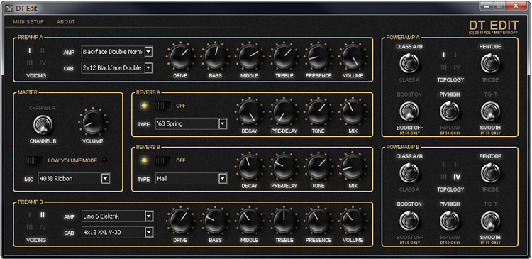

DT Edit
A free Editor for Line6 DT25 and DT50 amplifiers.

Introduction
The Line6 DT amplifiers are great amps out of the box but the full potential of these amp could initially only be revealed by attaching a Line6 POD HD over Line6-Link.
But just recently Line6 has released a firmware update for the DT amplifiers that enables access to several internal parameters, including the amp model selection. This greatly upped the flexibility of the DTs as any of the eight voicings now can be configured to use it's own amp model out of a long list of models.
The downside is that you only can change these values over MIDI and Line6 has decided to only release edit software for exotic Apple iThings to access the amp's new parameters.
This is where this application comes in.
Features
- Edit all available parameters right from your computer screen.
- Supports Bi-directional communication. All changes you make on your DT will automatically be reflected on your computer screen.
- Load and save settings and sounds (currently in the works).
- Platform independent code base. It should be easy to compile on Linux, Windows and Mac.
Installation
There is a zip file with an installer for Windows in the download section. Just unzip the file, start the setup.exe and follow the instructions.
There are no pre-compiled packages for Linux and Mac. The Linux sources should build right out of the box either with qt-creator or from the command line with qmake/make. Packages for Debian, Ubuntu etc may follow later (if there is a demand).
I don't have a Mac and I'm definitely not going buy one anytime soon. So I don't know what is needed to get the editor running on OSX. The code itself should compile fine with qt-creator but the build process might need some tweaking.
Status
Loading and saving is currently not enabled in the latest build but may be added in a later release.
This software is still in alpha state. It will not format your hard disk or something like that but there is still a lot that can go wrong. It runs fairly well here but my machine is only one of a gazillion possible configurations out there.
Please use it at your own risk and use the issue tracker above if you encounter any strange things. I will try to fix this as soon as possible.
There is also a lively discussion on the official Line6 board about this editor.
Known Bugs
I was not able to get some of the DT's values when syncing. Getting values from the amp is not documented at all and I hope that I will get some help from Line6 here. But I've not received a response from them yet.
Currently the following dials and controls will not show the current state of the DT:
- Reverb A: Decay, Pre Delay, Tone and Bypass state.
- Reverb B: Decay, Pre Delay, Tone and Bypass state.
The editor will alter these values only when you actually move a dial. If you don't touch these controls then the amp will keep it's stored settings.
Tips
If you hold the shift key down while selecting amp model then the amp model will be changed without loading the default cab and power amp settings for this model.
The Source
Please note: This project is licensed under the GPL! This means: If you are using parts of the code (like the parameter retrival from the amp) or any of the included bitmaps (like the toggle switches) then your project is automatically licensed under the GPL as well. This means that it's automatically open source too!
I program closed source software for a living so I'm not a religious open source evangelist by any means. But I've chosen the GPL for this project for a reason. However, this is a small project and I'm not going to start lawsuit anytime soon. But it really makes me sad if credits are not given where credits are due.